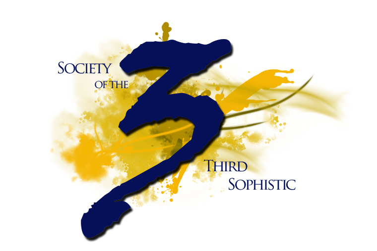

Welcome Back Gathering
Kick off the semester, meet new students, and reconnect with the RCID community.
Details TBA
Society of the Third Sophistic RCID Student OrganizationClemson University / RCID
S3S gathers the everyday things doctoral students need: events, resources, program links, peer support, and the people who can point you in the right direction.
These links are designed to keep the homepage useful even before S3S has a large archive of posts.
Degree overview, faculty, admissions, and official program information.
Milestones RCID HandbookProgram policies, expectations, exams, committees, and degree progress guidance.
Research RCID Library GuideDatabases, research support, teaching resources, and Clemson library services.
Archive RCID DissertationsBrowse recent and past dissertations from the program.
Legacy Current S3S ArchiveOlder posts, calls, awards, and announcements from the existing WordPress site.
Shared S3S DriveAdd the current shared drive link here once officer access is confirmed.
Officer names and responsibilities can be updated each election cycle without changing the layout.
General coordination, program liaison work, and meeting leadership.
Events, committee support, and continuity across projects.
Meeting notes, records, forms, and internal communication.
Budget tracking, funding requests, and financial documentation.
The Society of the Third Sophistic supports students in Rhetorics, Communication, and Information Design through community events, resource sharing, professional development, peer mentoring, and program-facing advocacy.
The site is intentionally practical: a public doorway for the organization, but mostly a useful place for current students to return to during the semester.
Use this area for the official S3S email, officer contact process, or a form link once the organization chooses the best handoff workflow. For now, the RCID program office is the stable contact route.